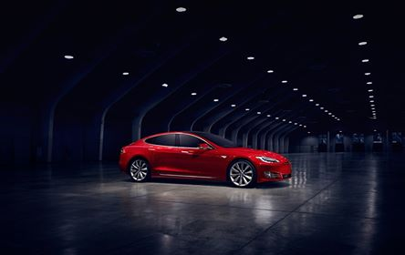
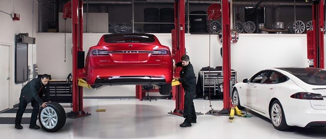
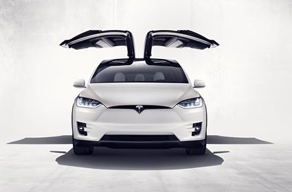
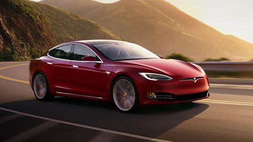

FIRMA SIMPLE ELECTRONICS
My nowoczesna firma, która dynamicznie się rozwija i promuje rozwój infrastruktury i samochodów elektrycznych w Polsce!
Dostarczamy samochody elektryczne ze Stanów Zjednoczonych i krajów UE. Pomagamy zdecydować o modelu samochodu elektrycznego.Pomagamy w rozwiązywaniu problemów z naprawą samochodu elektrycznego.
Zwracają się do nas, gdy chcą kupić samochód wysokiej jakości. Zwracają się do nas, gdy chcą osiągnąć nowy poziom, aby raz i na zawsze podnieść swój status w społeczeństwie. W końcu właściciel samochodu elektrycznego jest osobą nowego rodzaju myślenia, osobą nowego pokolenia i wiek tu nie ma znaczenia.
Pracujemy na rynku motoryzacji od 15 lat. Dlatego mamy odpowiedzi na wszystkie pytania potwierdzone prawdziwym doświadczeniem. Chcemy nie tylko sprzedać samochód, ale także zostać dla ciebie wiarygodnym partnerem. Naszym celem jest wypełnienie polskich dróg niezawodnymi i bezpiecznymi samochodami elektrycznymi, aby globalna atmosfera miast, była czysta – czysta od hałasu i spalin. SIPMLE ELECTRONICS – czas wybrać jakość.
SAMOCHODY ELEKTRYCZNE TO
- TECHNOLOGIE
- - Obecnie zasięg elektrycznego samochodu wynosi od 130 do 600 km przy użyciu czystej energii elektrycznej.
- EKOLOGIA
- - 0% szkodliwych spalin, paliw olejowych, płynu niezamarzającego, oleju silnikowego i przekładniowego nie jest zużywanych.
- OSZCZĘDNOŚĆ
- - Oszczędności eksploatacyjne sięgają 25 razy, ponieważ na 100 km samochód elektryczny zużywa tylko 10-13 kW energii.
- PRZYSZŁOŚĆ
- - Jednoznacznie samochody elektryczne to nasza zdrowa przyszłość i czyste powietrze wokół nas i naszych dzieci.
Statystyka
- 2,000 Sprzedano samochodów
- 100% Zadowolonych klientów
- 75,000,000 $ Sprzedano na tę kwotę
- 3,600 Wykonane usługi